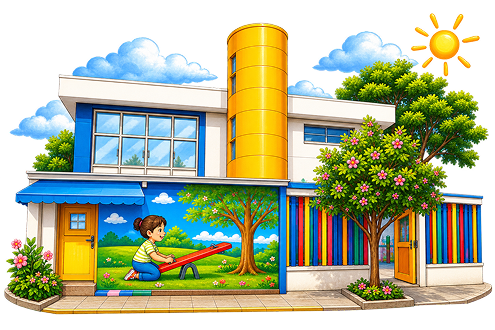
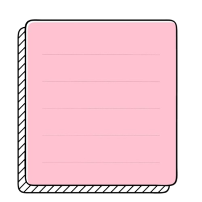
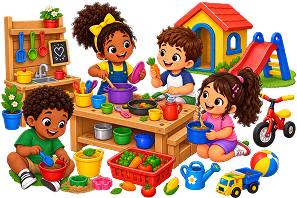
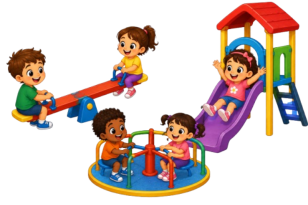
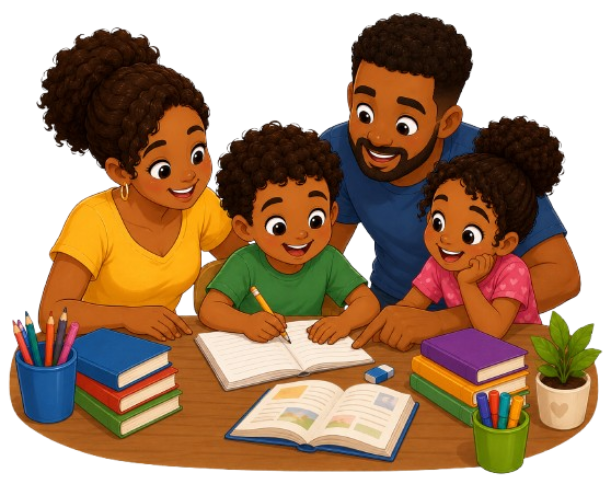
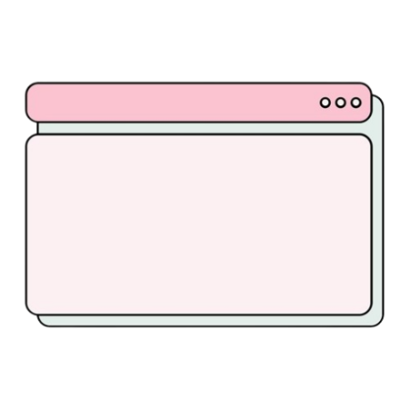
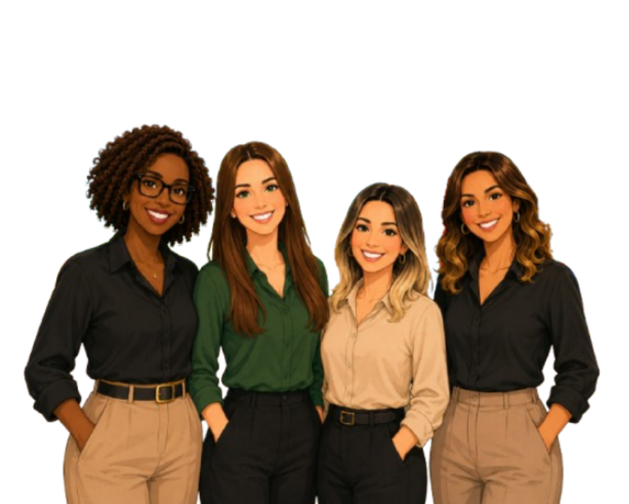

Horta
Cuidar da terra, plantar, colher e aprender sobre alimentação saudável.

brincar, descobrir, explorar, conviver e crescer
sendo respeitado em cada forma de se expressar.

Somos parte da Rede Municipal de Ensino de São Paulo e estamos no coração do bairro Jardim Rosa Maria. Desde 2001, acolhemos crianças com carinho, respeito e compromisso com a educação pública de qualidade

Aqui cada
criança é única,
curiosa, potente
e capaz de
transformar o
mundo.
A criança investiga, experimenta e descobre o mundo ao seu redor
Diferentes linguagens para contar o que sente, pensa e imagina.
Respeito, empatia e parceria para construir relações saudáveis
O brincar é a linguagem base da infância e a base da aprendizagem
Cuidar da terra, plantar, colher e aprender sobre alimentação saudável.
Histórias que encantam e desenvolvem a imaginação.
Arte, cores e criatividade em diferentes materiais e linguagens.

Receitas, descobertas e sabores que aproximam e ensinam.

Aprender também fora das salas, em contato com o mundo real.

A parceria entre a família e a escola é essencial para o desenvolvimento das crianças. Acreditamos na escuta, no diálogo e na participação ativa das famílias na vida escolar.

“Educar é uma construçãoNossa equipe trabalha com dedicação e amor para garantir um ambiente acolhedor, seguro e cheio de possibilidade para as crianças.
